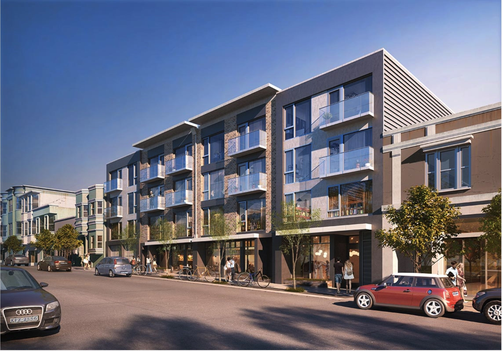
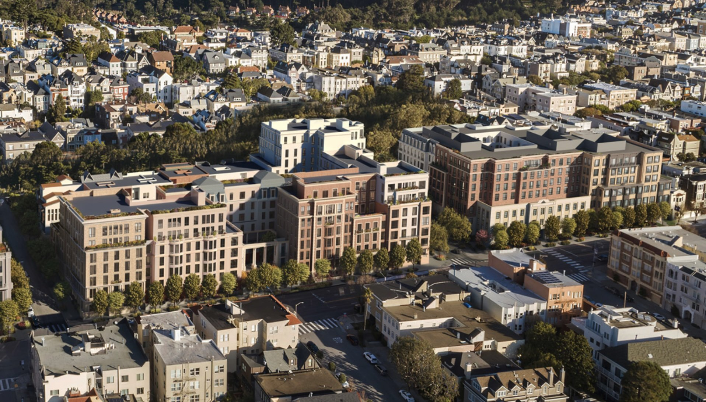
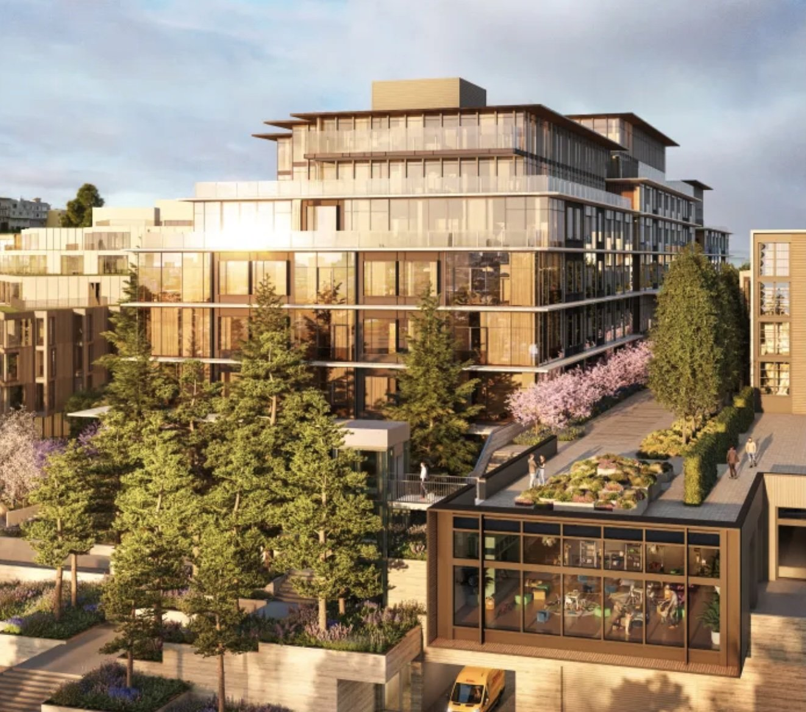

Neighborhood Projects
The following are local neighborhood development projects affecting Presidio Heights.

3637-3657 Sacramento Street
Litke Properties, Inc. is underway building a 4 story, mixed-use, residential development in the heart of Presidio Height's retail corridor. It is replacing a medical/office building and a parking structure. With its brick and plaster facade, the project works to maintain the conservative elegance of the neighborhood by complementing the diversity of the surrounding individuals and buildings.

3700 California Street
The 3700 California project will transform a vacant, obsolete hospital building into a beautiful, high-quality residential community. 3700 California will gracefully fit in with the existing community, mirroring the unique aspects and charm of buildings in the area and supporting a walkable lifestyle. By reflecting a mix of architectural styles, quality materials, and soft landscaped edges, each new building will blend into the look and feel of the adjacent neighborhoods.

3333 California Street
Led by the Prado Group, and entitled by a partnership between Prado Group and SKS, the project sponsorship specializes in best in class housing, retail and walkable mixed-use developments in the most coveted neighborhoods. Now, at the helm of Presidio Highlands, the team seeks to leverage its deep local knowledge and sustainable approach to timeless design to create a truly once-in-a-lifetime development in San Francisco's prestigious northside.